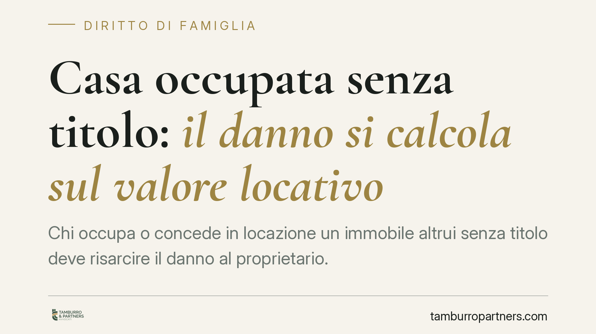

Casa occupata senza titolo: il danno si calcola sul valore locativo
Chi occupa o concede in locazione un immobile altrui senza titolo deve risarcire il danno al proprietario. Una recente pronuncia della Terza Sezione Civile della Cassazione conferma che tale danno si quantifica sul valore locativo del bene. Il punto rilevante: non è un danno automatico, ma presunto in base alla perdita della possibilità di godere dell'immobile.

Il principio affermato dalla Cassazione
La Terza Sezione Civile della Cassazione è tornata sul tema del danno da occupazione senza titolo di un immobile, confermando un orientamento oramai consolidato: chi gode di un bene altrui, o lo concede in locazione a terzi senza averne diritto (la cosiddetta locazione *a non domino*, cioè stipulata da chi non è proprietario), è tenuto a risarcire il titolare.
La misura del risarcimento si ancora al valore locativo del bene, ossia al canone che il proprietario avrebbe potuto percepire mettendo l'immobile sul mercato. È questo il parametro naturale per misurare ciò che il titolare ha perso: la possibilità concreta di trarre utilità economica dalla cosa propria.
Danno non "in re ipsa": cosa significa davvero
Il nodo centrale riguarda la natura del danno. Le Sezioni Unite (Cass. SU n. 33645/2022) hanno chiarito che il danno da occupazione non è in re ipsa, cioè non si considera esistente per il solo fatto dell'occupazione.
La differenza è sostanziale. Un danno *in re ipsa* non andrebbe provato: basterebbe l'illecito. Le Sezioni Unite hanno invece stabilito che il pregiudizio consiste nella perdita della facoltà di godere del bene, e che tale perdita ha normale inerenza all'occupazione. In pratica: il danno si presume, perché normalmente chi non può usare o affittare un immobile subisce un pregiudizio.
Si tratta però di una presunzione superabile. L'occupante può dimostrare che il proprietario non avrebbe comunque utilizzato né locato il bene, facendo così venir meno il danno concreto. L'onere, in questo caso, si sposta su chi occupa.
La quantificazione e l'articolo 1226 cod. civ.
Individuata l'esistenza del danno, resta da determinarne l'importo. Qui interviene l'art. 1226 cod. civ., che consente al giudice la valutazione equitativa quando il danno non può essere provato nel suo preciso ammontare.
Il valore locativo diventa quindi il riferimento di base: il giudice parametra il risarcimento al canone di mercato, eventualmente adeguandolo alle circostanze del caso concreto. L'illecito che fonda la pretesa resta inquadrato nella responsabilità extracontrattuale ex art. 2043 cod. civ.
Famiglia, separazioni e usufrutto
La questione emerge spesso in contesti familiari. Si pensi all'immobile della figlia gestito da un genitore, o all'uso della casa dopo la separazione. Qui può rilevare l'usufrutto legale dei genitori sui beni del figlio minore, disciplinato dall'art. 324 cod. civ.
L'usufrutto legale attribuisce ai genitori il godimento dei beni del figlio, ma con limiti precisi e con destinazione dei frutti al mantenimento della famiglia e all'istruzione del figlio stesso. Quando l'uso dell'immobile esce da questo perimetro — ad esempio perché un genitore lo occupa o lo loca a proprio vantaggio esclusivo, senza titolo che lo legittimi — può configurarsi un godimento *sine titulo* risarcibile. La verifica va fatta caso per caso: non ogni uso familiare dell'immobile integra un illecito, ma solo quello privo di una base giuridica che lo giustifichi.
Cosa cambia per il proprietario e per l'occupante
Per il proprietario: la pretesa risarcitoria è più solida se documenta la perdita subita. Non basta allegare l'occupazione; conviene dimostrare la vocazione locativa o l'uso programmato del bene.
Per l'occupante: esiste un margine difensivo concreto. Provare che il bene sarebbe rimasto inutilizzato riduce o annulla il risarcimento dovuto.
Cosa fare in concreto
- Documentate il valore locativo: raccogliete annunci comparabili, perizie o precedenti contratti di affitto dell'immobile o di beni analoghi in zona.
- Ricostruite la cronologia dell'occupazione: date di inizio e fine, eventuali diffide, comunicazioni e tentativi di rilascio.
- Verificate l'esistenza di un titolo: nei contesti familiari, controllate provvedimenti di assegnazione della casa, accordi di separazione e i limiti dell'usufrutto legale ex art. 324 cod. civ.
- Conservate la prova dell'uso programmato: se intendevate locare o utilizzare l'immobile, raccogliete elementi che lo dimostrino, utili a sostenere la presunzione di danno.
- Valutate per tempo l'azione: consigliamo, nei casi che coinvolgono separazioni e immobili cointestati o di terzi, di impostare la strategia prima di avviare la causa, distinguendo pretesa di rilascio e pretesa risarcitoria.
---
*Contributo informativo a cura di Tamburro & Partners - Avv. Giuseppe Tamburro. Non costituisce parere legale.*
Ogni famiglia ha il suo equilibrio.
Separazione, divorzio, affidamento, assegno: se vuoi un confronto riservato su una specifica situazione, scrivi allo studio. Ti rispondiamo entro un giorno lavorativo.